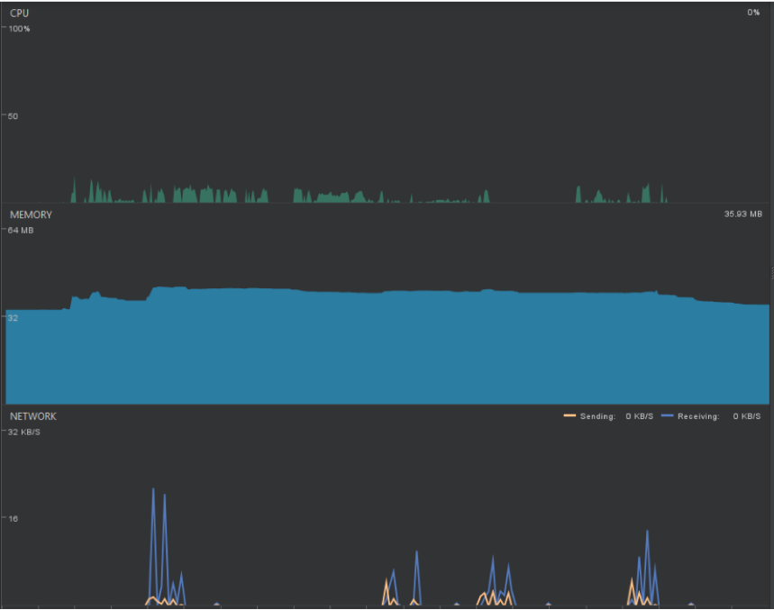
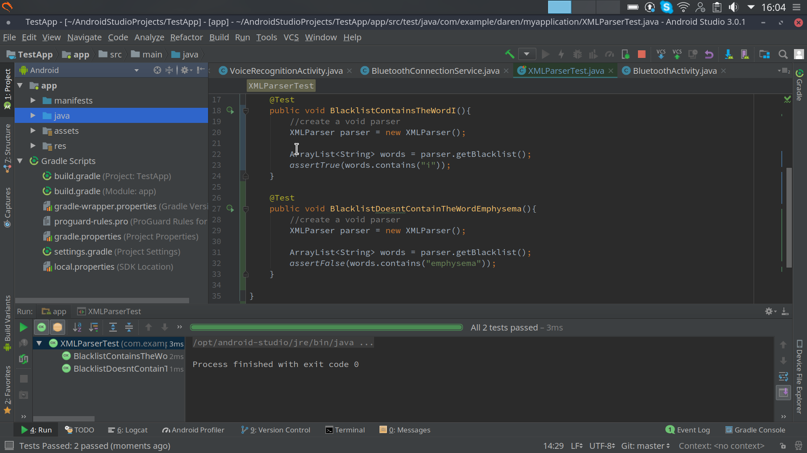

Nadim Edde Gomez
In this section, we will detail the testing process for our application and its outcome. We will discuss some testing strategies such as system integration and we will also give an overview of all the test cases that we designed to make sure that the app's main functionalities are working.
First of all we carried out some performance testing using android studio's in-built tool. This allowed us to see if our application was using a certain resource too much. Below is a comparison of our testing from midway through the development process and at the end of development.
CPU usage is very low even when using speech recognition while also sending data to the dictionary server. Other usage of the app has very minimal impact on the CPU. When it comes to memory there is a high baseline usage but does not increase much when being used in a session which is to be expected. We have also monitored memory for prolonged uses to see if there was any memory leak dues to poorly written code but within our testing we have not spotted any abnormalities. Network usages us also within the expected boundaries as data is only transferred during the lookup of definitions and the volume of data is very small due to the information sent and received being small string in xml.
This graph shows the second phase of performance testing which was taken at the very end of the development. Since the last performance test, writing and reading from storage using XML serializers as well as bluetooth connectivity has been added. There is a significant hike in memory usage towards the end of sessions which is expected as that is when all the data from a session is being written. Due to the added bluetooth functionality if we compare to the CPU usage in the last test you can see that it is used more frequently at a consistent rate as opposed to spikes. This is expected when using bluetooth and does not affect the user in any way. However due to the increased usage there is a minor increase on battery drain which is a caveat when using bluetooth in the first place. Overall the addition of the extra features have not introduced any problems on the hardware side of things and should continue to function well on a large range of Android devices.
Usability testing is useful to carry out when you want to evaluate how a user would use your application. We carried out this testing by observing people using our application. The testers were not given any prior manual for using the application so that they were completely new to the app. We did however briefly explain the goal of the application so that they had a starting point for usage. The table below summarises our observations:
| Use Case | Observed difficulty | Improvements |
|---|---|---|
| Starting the application | Home page is blank, confusing as you do not know where to start | Add info about the app and links to specific pages on the landing page |
| Opening the sidebar menu | Some blank links, many links to press | Reduce the amount of pages and add functionality to them by category (eg: Session manager in 1 place) |
| Starting a session | Visual indicators on buttons not clear | Add more descriptive labels and underline the main button |
| Showing word definition or going to next word | None | None |
| Ending a session | Unsure what button to click (off or end session) | Explain the process in the manual |
| Reviewing a session | None | None |
| Deleting a session | None | None |
Our goal is to make the UI easily navigable and visually appealing whilst keeping it minimal so that the user can focus on what is important. This simplicity we aim for will let them focus on the task at hand rather than being distracted by the application as that would work against our goal of developing an effective learning tool. However, it also can create some confusion which we have tried to solve by making the buttons more descriptive. Additionally, we provide a user's manual that details the various processes and how to use the application.
As shown in our production timeline, the development of the application was split into major components which would be worked on separately and then brought together once the individual parts have been tested and working. These parts mainly consisted of UI design, creation of the speech recognition service, creation of the medical dictionary lookup and the smart glasses interface and communication to and from the mobile application.
Initially the basic frame of the application was developed which checked for appropriate navigation between the screens of the application and writing the button interactions. Alongside this the speech recognition was development in a standalone activity. After they were tested, the background activity was then converted to a fragment to suit the style of the UI application structure and re-tested.
The next step was adding the dictionary lookup part of the application. Since there was no voice input, initially this was completed using and input box where words were simply entered in. The first step of importing this into the main application was converting the activity to a fragment and then testing it in the same way as when it was tested in its standalone app. After confirming the dictionary lookup was still working, the dictionary lookup had to be altered so that it is able to take voice input rather than only an input box. This was initially tested using single key phrases then multiple phrases in succession to then finally being tested with a regular sentence containing a mixture of keywords and regular conversational text.
In addition to the above, we have created a test suite containing tests relating to all of our functionality. For example all test cases labelled TC_Logs will be test cases for using the logs. We have aimed to provide an extensive list of test cases that can be used to guide a user through using the application.
We also did some unit tests throughout the development of our application to test specific features. Below are the 2 unit tests that we used to check that the blacklisted words were being added correctly and non-blacklist words were not being added to the list.
First of all, we demonstrated our application to our client at NTT Data. The feedback was positive as we had met all of the requirements. Additionally, we asked our client Dr. Atia Rafiq to provide feedback on our application. The follwing is the response that we got:
Thank you for doing such a wonderful job on this proof of concept project for NHS digital. You have managed to capture the essential requirements and come up with really innovative ideas to take forward.
The key achievements of your system are :
This is a significant case study for further AR related medical training
The app is very easy to use
It engages users with a correct level of complexity
Future applications will be possible with machine learning which you came up with suggested solutions
Working with nttdata technologies has broadened our engagement
You worked in a professional manner with regular updates.
In terms of key features you have built:
A user can start a session and the speech to text functionality is enabled.
Medical terms are picked out from the conversation and the user is provided with the choice to skip that term or show its definition on the phone and the smart glasses.
The user can disable the speech to text functionality if they don't want the conversation to be recorded.
The terms are saved into sessions that the user can access them later.
Many thanks for your very hard work and I hope that you all have every success in your degrees. I look forward to your presentation on April 24th at UCL.
Nadim Edde Gomez

Daren Alfred

Maria Miscouridou